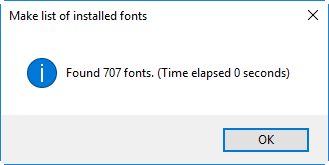

everyItem().getElements()
Question:
What is the difference between the following two lines?
var myFrames = app.activeDocument.textFrames;
and
var myFrames = app.activeDocument.textFrames.everyItem().getElements();
In both cases the script works as expected. Why do you add .everyItem().getElements()?
Answer:
Because everyItem().getElements() builds a static Array of the items.
Without it, it's a dynamic collection. When you have a collection, there has to be interaction with InDesign
every time you access a member of the collection and InDesign rebuilds
the collection each time it's accessed. That means a lot of extra
overhead. Bottom line: using a static array is almost always faster than using
collections.
Let's illustrate it with example: say, I want to get the list of all the fonts available in InDesign and write it to a text file on the desktop. Here is the Make list of installed fonts script I wrote for testing.
With .everyItem().getElements() -- using static array -- it takes less than a sec.
var fonts = app.fonts.everyItem().getElements();

if I remove it (use live collection) it takes a whole 9 secs.
var fonts = app.fonts;
However, it doesn't mean that we should always use everyItem().getElements(). In some cases we have to deal with a live collection. For example, writing this script. It's not the final version, of course, but it will give you an idea. The script dynamically adds new rows (duplicates the product name) at the top of a new page so it should deal with dynamic collection which is updated after a row is added. If you add "everyItem().getElements()", the script will run a little bit faster (maybe), but it's functionality will be totally broken.